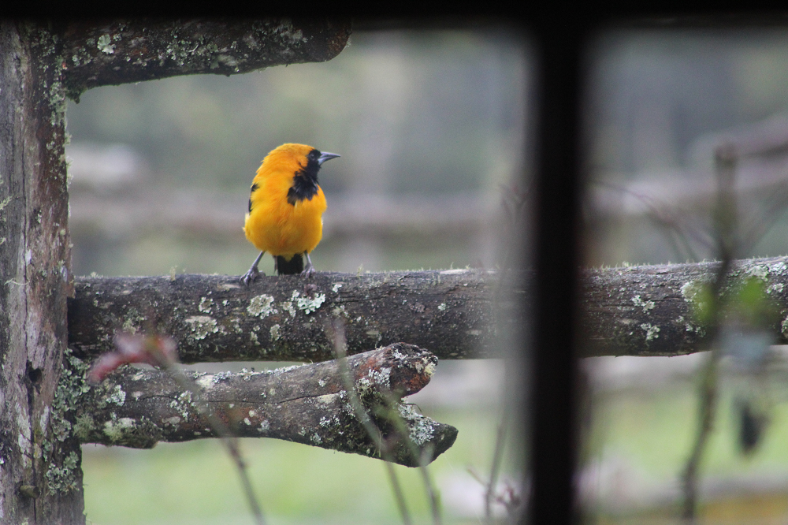

Home > Critical notes > From Quisquiza (17 of 20)
From Quisquiza (17 of 20)
Acoustic Field
When Fog Edits Sound
This note is part of a series written from Quisquiza, in the high-Andean cloud forest of Colombia, where ecological restoration and research now unfold side by side. It reflects on how living and working within this terrain gradually reshapes the way I think about memory, information, and the infrastructures built to sustain them. Check all the notes in this section's index.
Some mornings, I hear the mountain turpial before I can find it.
Which, to be fair, is almost every morning.
The yellow bird is somewhere in the trees surrounding my house, announcing its existence with the confidence of a creature that has never had to worry about paying rent. Its song arrives clearly enough. But the singer? Not a chance.
I look toward one branch, then another. I walk a few meters, convinced I have finally located it, and suddenly the sound seems to come from somewhere entirely different.
(I suspect the turpial finds the whole affair quite entertaining.)
Here in Quisquiza, sound is a complicated business. The river runs below my house, two small streams descend along the sides of the property, and wind moves through the trees, the bamboo, and the grasses. Insects contribute their own acoustic opinions, frequently at volumes entirely disproportionate to their size.
And then there's the rain, of course, always eager to participate.
On certain mornings, distant sounds seem extraordinarily close. On others, familiar calls become indistinct, swallowed by water or wind. A branch cracks somewhere in the forest, and the sound reaches me with astonishing clarity. A few minutes later, something equally substantial falls, apparently without making a sound at all.
At first, I blamed the fog. There's certainly enough of it around here to justify suspicion. But fog doesn't necessarily muffle sound in the way we imagine.
The tiny droplets suspended in the air aren't automatically responsible for making things quieter. What reaches our ears depends on temperature, humidity, wind, terrain, vegetation, distance, and the frequencies involved. Sometimes, the atmospheric conditions accompanying fog actually allow distant sounds to travel surprisingly well.
And then there's the question of masking: a nearby stream can make a distant bird impossible to hear without affecting the bird's song in the slightest.
The distinction interests me enormously. There's a difference between a sound not being produced, a sound failing to reach us, and a sound reaching us without becoming perceptible. Three different situations, with very different explanations, that can nevertheless produce exactly the same experience for the listener: silence.
And silence, as I'm discovering, is a terribly unreliable source of information.
I've been recording some of the sounds of this place. Birdsong, insects, running water, rain, and the peculiar acoustic textures of the forest at different hours. And I've discovered that recording something and listening to it aren't necessarily the same operation.
A microphone captures sounds according to its position and technical characteristics. My ears, meanwhile, are remarkably good at concentrating on one particular sound while ignoring others. I hear the bird, but the recording is dominated by the stream. I hear the stream, but the recording reveals an insect I hadn't noticed at all. Neither the microphone nor my ears provide a complete representation of what happened. Both are selective, although in different ways.
(And the insect, incidentally, seems convinced that it's the principal performer.)
As an archivist, I find this deeply familiar, because institutions have acoustic environments too. Not necessarily in the literal sense, although anyone who has worked in a particularly noisy office knows that institutional architecture can be acoustically criminal. I mean something more fundamental: archives, libraries, universities, and other knowledge institutions establish conditions under which certain expressions become perceptible, recognizable, intelligible, and worthy of attention. They have their own forms of amplification and masking, their own channels through which some voices travel effortlessly while others struggle to reach anyone at all.
An institutional report receives attention because it arrives through the expected channels, in the appropriate format, carrying recognizable credentials. A community's oral testimony may contain information of extraordinary significance and still be treated as anecdotal, insufficiently documented, or difficult to incorporate. Sometimes it isn't even explicitly rejected. It simply isn't heard. A community may articulate its concerns repeatedly, and a body of knowledge may persist for generations, without either being recognized by the structures supposedly responsible for collecting and preserving knowledge.
Of course, the comparison has its limits. Political exclusion isn't an unfortunate consequence of atmospheric conditions. Institutions make decisions, people exercise authority, categories are constructed, and priorities are established. Some forms of knowledge are deliberately marginalized, while others disappear into the background because nobody has considered them important enough to notice.
Sometimes somebody has decided where the microphone should point. And sometimes somebody else controls the volume.
This is why collecting more information doesn't automatically produce a more inclusive memory system. An archive may preserve thousands of testimonies without allowing them to influence its interpretations. A database may incorporate local names while continuing to privilege external classifications. An institution may document disagreement while ensuring that the disagreement has absolutely no consequences for its decisions. The voices have been captured, technically speaking, but whether they've been heard, understood, or granted any authority is an entirely different matter.
And that question requires examining not only what institutions collect, but how they listen. Which expressions they recognize as meaningful, which forms of communication they consider legitimate, which kinds of evidence they privilege, and who gets to decide what a recorded voice actually means. More documentation doesn't necessarily produce greater understanding, just as more sound doesn't necessarily mean better listening.
Yesterday, I heard the turpial again, somewhere across the slope. The river was particularly loud after the rain, and the song came through intermittently. A few notes, then nothing. Another phrase, half concealed by the water. Then a longer passage, suddenly clear. I stood there listening, trying to recognize the pattern, until the wind changed and I lost the bird again.
I could have concluded that it had stopped singing. I might even have written that observation in my notebook. But I would have been documenting the limits of my hearing, not necessarily the behavior of the bird. And that, I think, is something worth remembering whenever we interpret the silences in our archives, collections, and knowledge systems.
What we cannot hear is not necessarily silent. And what we have recorded is not necessarily what was said.